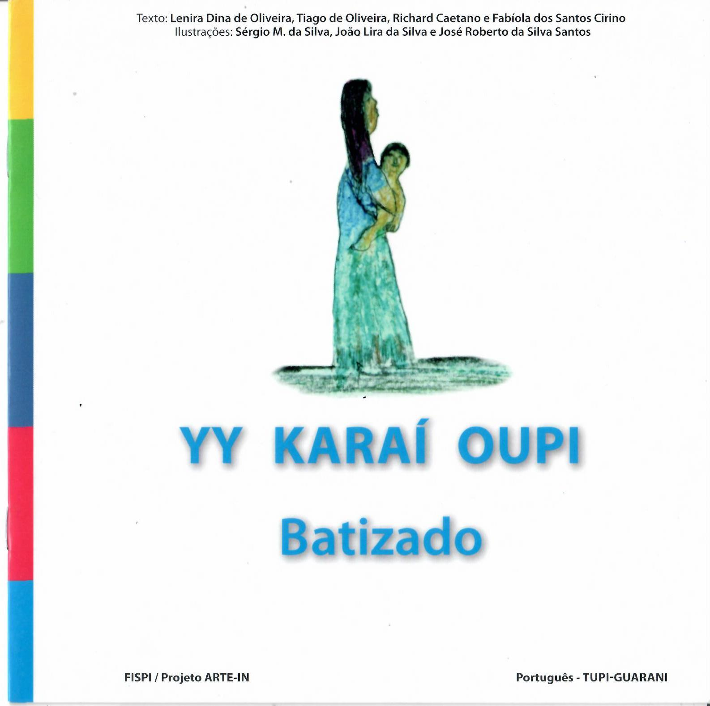
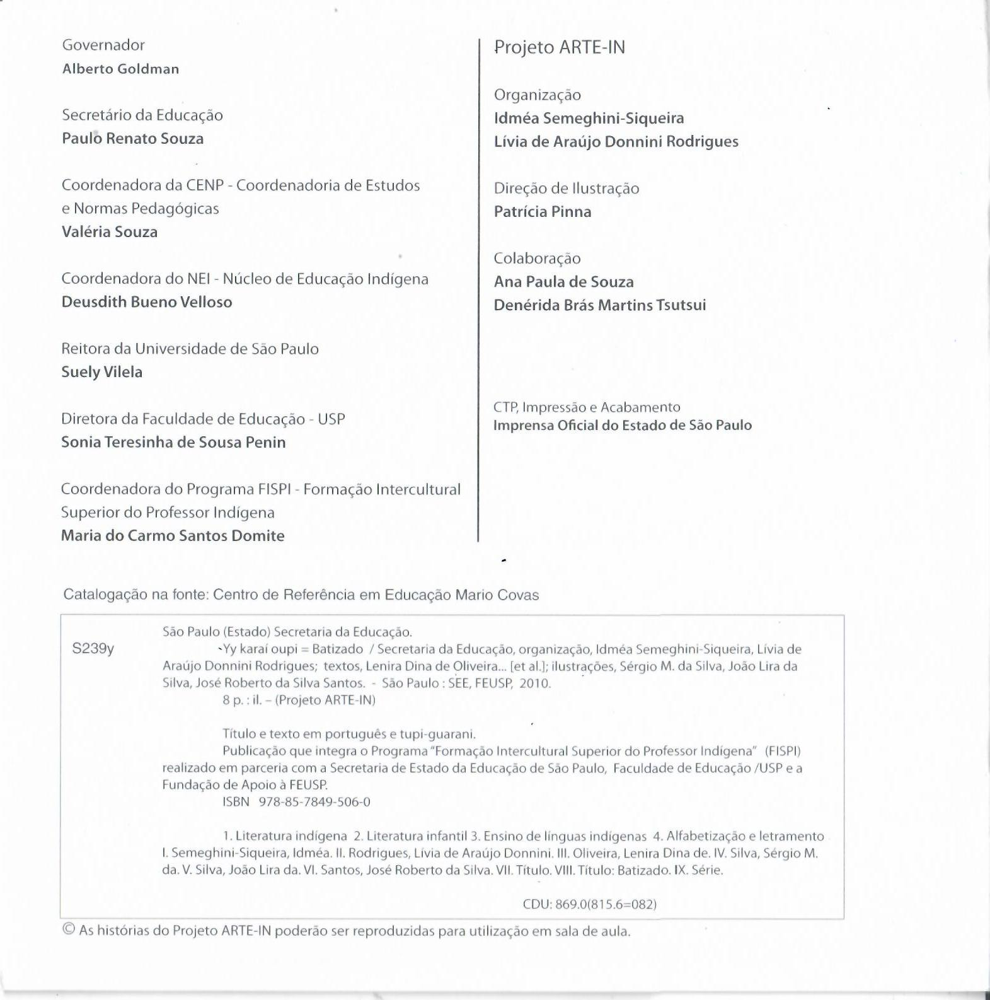
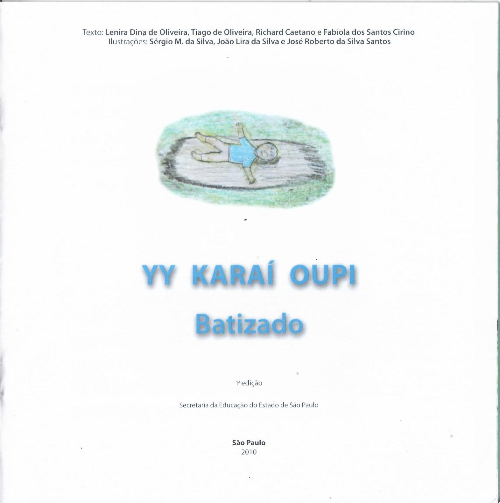
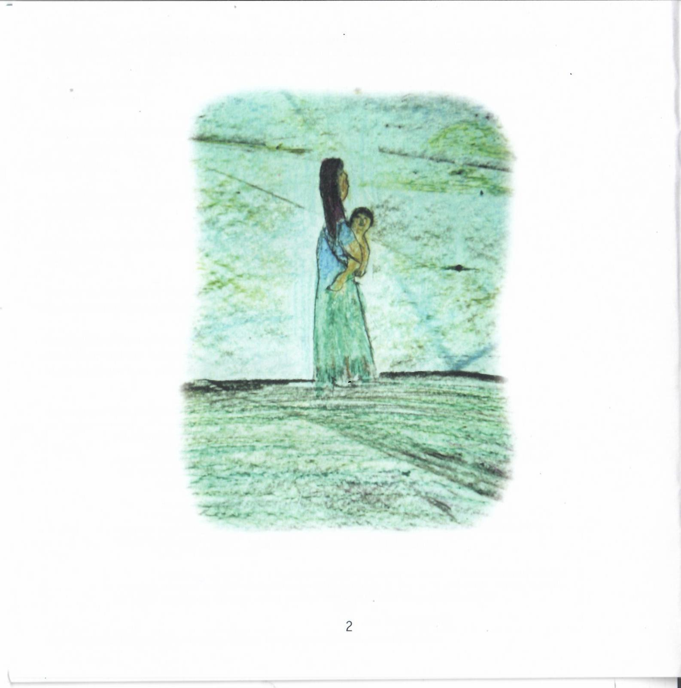
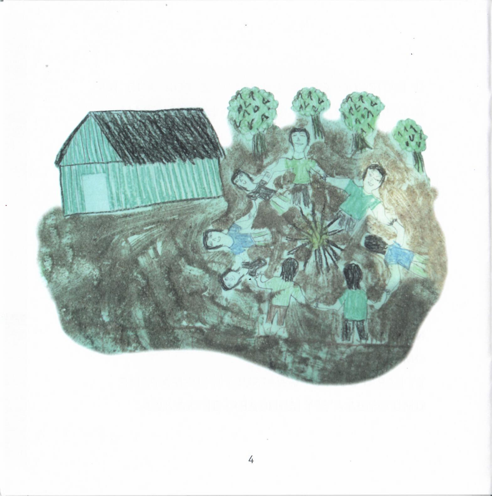
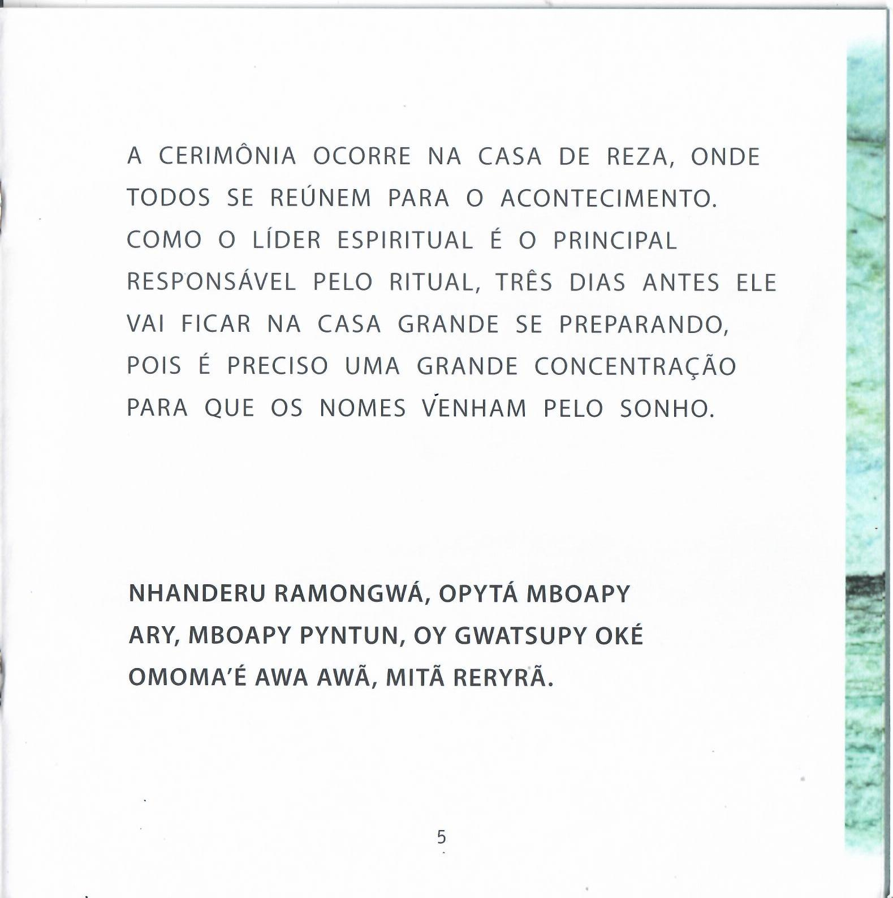
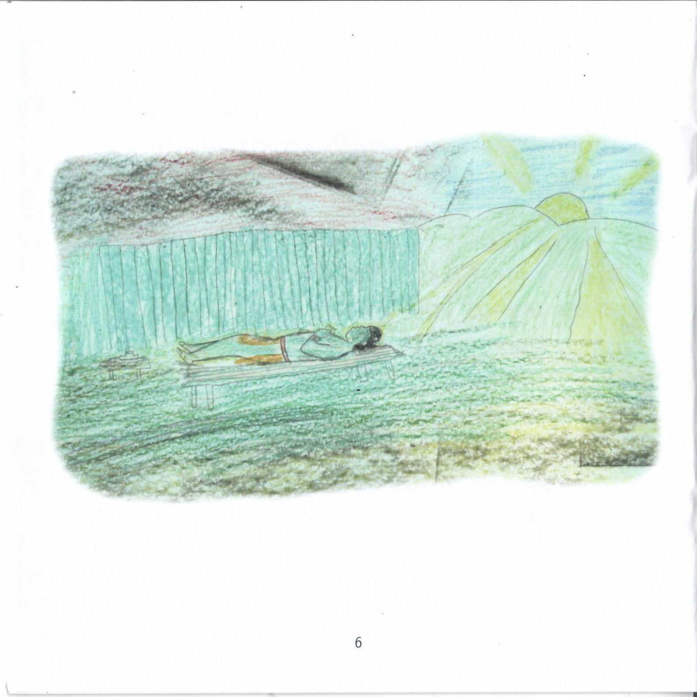
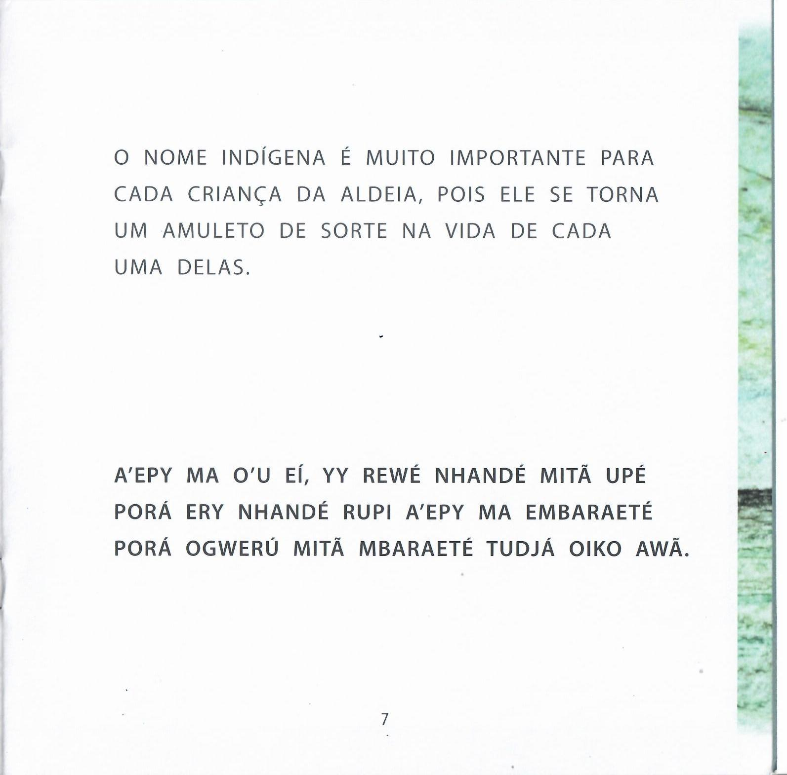

<!-- MODAL DO CARD 2: Batismo na Colheita (Mongarai / Yy Karaí Oupi) -->
    <div id="modal-2" class="modal-overlay">
        <div class="modal-conteudo-box" style="max-width: 750px; max-height: 85vh; overflow-y: auto;">
            <button class="btn-fechar-modal" onclick="fecharModal('modal-2')">&times;</button>
            <h2 style="color:#2d6a4f; margin-top:0; font-size: 1.3rem;">Batismo na Colheita (Mongarai / Yy Karaí Oupi)</h2>
            
            <p style="color:#495057; line-height:1.6; margin-top:15px; font-size: 0.95rem;">
                O <strong>Mongarai</strong> (ou <em>Yy Karaí Oupi</em>) é o eixo central da cosmologia guarani que sela a introdução social e espiritual da criança na comunidade durante o ciclo da colheita. Nessa ocasião, o líder espiritual concentra-se por vários dias na Casa de Reza (<em>Opy</em>) para receber, em sonho, o nome sagrado (<em>ery</em>) adequado para cada infante. Na ausência de uma liderança ritual, a mãe pode sonhar o nome ao entoar a canção <em>“Owe Owe”</em>.
            </p>

            <p style="color:#495057; line-height:1.6; margin-top:10px; font-size: 0.95rem;">
                Mais do que uma designação, o nome indígena atua como um amuleto e um eixo de ancoragem para a palavra-alma (<em>ñe'ẽ</em>). Caso a criança manifeste morbidade persistente, compreende-se que a causa pode estar na inadequação do nome, exigindo sua substituição para restabelecer a harmonia vital. Unindo a colheita, a oniricidade e a flexibilidade dos rituais, o povo Ñandeva reafirma dinamicamente o seu <em>Nhandereko</em>, garantindo a proteção e a continuidade coletiva.
            </p>
            
            <!-- ABAS DE SELEÇÃO DE LIVROS -->
            <div style="display: flex; justify-content: center; gap: 10px; margin: 25px 0 15px 0; border-bottom: 2px solid #dee2e6; padding-bottom: 10px;">
                <button onclick="alternarLivro('mongarai')" id="btn-tab-mongarai" style="background-color: #2d6a4f; color: white; border: none; padding: 10px 20px; border-radius: 6px; font-weight: bold; cursor: pointer; font-size: 0.95rem; transition: background 0.2s;">
                    📖 Mongarai - Batizado na Colheita
                </button>
                <button onclick="alternarLivro('batizado')" id="btn-tab-batizado" style="background-color: #e9ecef; color: #495057; border: none; padding: 10px 20px; border-radius: 6px; font-weight: bold; cursor: pointer; font-size: 0.95rem; transition: background 0.2s;">
                    📖 Yy Karaí Oupi - Batizado
                </button>
            </div>

            <!-- CONTAINER DO LIVRO 1: MONGARAI -->
            <div id="secao-mongarai" style="display: block;">
                <!-- Carrossel Mongarai -->
                <div style="margin: 15px 0; padding: 15px; background: #fff; border: 1px solid #dee2e6; border-radius: 8px; box-shadow: 0 2px 6px rgba(0,0,0,0.05);">
                  <div id="livroCarrossel" style="position: relative; background: #f8f9fa; border-radius: 6px; padding: 15px; text-align: center;">
                    
                    <div class="pagina-item" style="display: block;">
                      
                      <p style="font-size: 0.85rem; color: #555; margin-top: 8px; font-weight: 600;">Capa: Mongarai - Batizado na colheita</p>
                    </div>

                    <div class="pagina-item" style="display: none;">
                      
                      <p style="font-size: 0.85rem; color: #555; margin-top: 8px; font-weight: 600;">Ficha Técnica</p>
                    </div>

                    <div class="pagina-item" style="display: none;">
                      
                      <p style="font-size: 0.85rem; color: #555; margin-top: 8px; font-weight: 600;">Página 1 - Créditos e Título</p>
                    </div>

                    <div class="pagina-item" style="display: none;">
                      
                      <p style="font-size: 0.85rem; color: #555; margin-top: 8px; font-weight: 600;">Página 2 - Ilustração da Fogueira</p>
                    </div>

                    <div class="pagina-item" style="display: none;">
                      
                      <p style="font-size: 0.85rem; color: #555; margin-top: 8px; font-weight: 600;">Página 3 - Tradição do Povo Tupi-Guarani</p>
                    </div>

                    <div class="pagina-item" style="display: none;">
                      
                      <p style="font-size: 0.85rem; color: #555; margin-top: 8px; font-weight: 600;">Página 4 - Início da Cerimônia</p>
                    </div>

                    <div class="pagina-item" style="display: none;">
                      
                      <p style="font-size: 0.85rem; color: #555; margin-top: 8px; font-weight: 600;">Página 5 - O Sonho do Líder Espiritual</p>
                    </div>

                    <div class="pagina-item" style="display: none;">
                      
                      <p style="font-size: 0.85rem; color: #555; margin-top: 8px; font-weight: 600;">Página 6 - A Roda da Aldeia</p>
                    </div>

                    <div class="pagina-item" style="display: none;">
                      
                      <p style="font-size: 0.85rem; color: #555; margin-top: 8px; font-weight: 600;">Página 7 - O Primeiro Nome</p>
                    </div>

                    <div class="pagina-item" style="display: none;">
                      
                      <p style="font-size: 0.85rem; color: #555; margin-top: 8px; font-weight: 600;">Página 8 - Detalhe da Cena</p>
                    </div>

                    <div class="pagina-item" style="display: none;">
                      
                      <p style="font-size: 0.85rem; color: #555; margin-top: 8px; font-weight: 600;">Página 9 - A Música "Owe Owe"</p>
                    </div>

                    <div class="pagina-item" style="display: none;">
                      
                      <p style="font-size: 0.85rem; color: #555; margin-top: 8px; font-weight: 600;">Títulos do Projeto ARTE-IN</p>
                    </div>

                    <div class="pagina-item" style="display: none;">
                      
                      <p style="font-size: 0.85rem; color: #555; margin-top: 8px; font-weight: 600;">Capa Final - Informações do Programa</p>
                    </div>

                    <button onclick="mudarPaginaMongarai(-1)" style="position: absolute; top: 50%; transform: translateY(-50%); left: 15px; background: rgba(0,0,0,0.6); color: #fff; border: none; border-radius: 50%; width: 40px; height: 40px; display: flex; align-items: center; justify-content: center; cursor: pointer; z-index: 10; font-size: 1.1rem;">❮</button>
                    <button onclick="mudarPaginaMongarai(1)" style="position: absolute; top: 50%; transform: translateY(-50%); right: 15px; background: rgba(0,0,0,0.6); color: #fff; border: none; border-radius: 50%; width: 40px; height: 40px; display: flex; align-items: center; justify-content: center; cursor: pointer; z-index: 10; font-size: 1.1rem;">❯</button>
                  </div>
                </div>

                <!-- Créditos Mongarai -->
                <div style="background: #f8f9fa; padding: 15px; border-radius: 6px; border-left: 4px solid #2d6a4f;">
                    <h4 style="color: #2d6a4f; font-size: 0.95rem; margin: 0 0 8px 0;">📖 Mongarai - Batizado na Colheita</h4>
                    <p style="color: #495057; font-size: 0.88rem; line-height: 1.5; margin: 0 0 6px 0;">
                        <strong>Professores / Autores:</strong> Jaciara de Souza Gomes, Creiles Marcelino da Silva Nunes e Catarina Delfina dos Santos.
                    </p>
                    <p style="color: #495057; font-size: 0.88rem; line-height: 1.5; margin: 0 0 6px 0;">
                        <strong>Ilustrações e Participantes:</strong> Abílio S. Martins e Odair Possídio.
                    </p>
                    <p style="color: #555; font-size: 0.82rem; margin: 0;">
                        <em>Data de publicação / Produção:</em> Programa ARTE-IN / Formação Intercultural.
                    </p>
                </div>
            </div>

            <!-- CONTAINER DO LIVRO 2: YY KARAÍ OUPI (BATIZADO) -->
            <div id="secao-batizado" style="display: none;">
                <!-- Carrossel Batizado -->
                <div style="margin: 15px 0; padding: 15px; background: #fff; border: 1px solid #dee2e6; border-radius: 8px; box-shadow: 0 2px 6px rgba(0,0,0,0.05);">
                  <div id="batizadoCarrossel" style="position: relative; background: #f8f9fa; border-radius: 6px; padding: 15px; text-align: center;">
                    
                    <div class="pagina-batizado-item" style="display: block;">
                      
                      <p style="font-size: 0.85rem; color: #555; margin-top: 8px; font-weight: 600;">Capa: Yy Karaí Oupi - Batizado</p>
                    </div>

                    <div class="pagina-batizado-item" style="display: none;">
                      
                      <p style="font-size: 0.85rem; color: #555; margin-top: 8px; font-weight: 600;">Ficha Técnica</p>
                    </div>

                    <div class="pagina-batizado-item" style="display: none;">
                      
                      <p style="font-size: 0.85rem; color: #555; margin-top: 8px; font-weight: 600;">Página 1 - Créditos e Título</p>
                    </div>

                    <div class="pagina-batizado-item" style="display: none;">
                      
                      <p style="font-size: 0.85rem; color: #555; margin-top: 8px; font-weight: 600;">Página 2 - Ilustração da Mãe e Criança</p>
                    </div>

                    <div class="pagina-batizado-item" style="display: none;">
                      
                      <p style="font-size: 0.85rem; color: #555; margin-top: 8px; font-weight: 600;">Página 3 - O Batizado Anual</p>
                    </div>

                    <div class="pagina-batizado-item" style="display: none;">
                      
                      <p style="font-size: 0.85rem; color: #555; margin-top: 8px; font-weight: 600;">Página 4 - Ilustração da Roda</p>
                    </div>

                    <div class="pagina-batizado-item" style="display: none;">
                      
                      <p style="font-size: 0.85rem; color: #555; margin-top: 8px; font-weight: 600;">Página 5 - A Casa de Reza e o Sonho</p>
                    </div>

                    <div class="pagina-batizado-item" style="display: none;">
                      
                      <p style="font-size: 0.85rem; color: #555; margin-top: 8px; font-weight: 600;">Página 6 - Concentração ao Amanhecer</p>
                    </div>

                    <div class="pagina-batizado-item" style="display: none;">
                      
                      <p style="font-size: 0.85rem; color: #555; margin-top: 8px; font-weight: 600;">Página 7 - A Importância do Nome</p>
                    </div>

                    <div class="pagina-batizado-item" style="display: none;">
                      
                      <p style="font-size: 0.85rem; color: #555; margin-top: 8px; font-weight: 600;">Títulos do Projeto ARTE-IN</p>
                    </div>

                    <div class="pagina-batizado-item" style="display: none;">
                      
                      <p style="font-size: 0.85rem; color: #555; margin-top: 8px; font-weight: 600;">Capa Final - Informações do Programa</p>
                    </div>

                    <button onclick="mudarPaginaBatizado(-1)" style="position: absolute; top: 50%; transform: translateY(-50%); left: 15px; background: rgba(0,0,0,0.6); color: #fff; border: none; border-radius: 50%; width: 40px; height: 40px; display: flex; align-items: center; justify-content: center; cursor: pointer; z-index: 10; font-size: 1.1rem;">❮</button>
                    <button onclick="mudarPaginaBatizado(1)" style="position: absolute; top: 50%; transform: translateY(-50%); right: 15px; background: rgba(0,0,0,0.6); color: #fff; border: none; border-radius: 50%; width: 40px; height: 40px; display: flex; align-items: center; justify-content: center; cursor: pointer; z-index: 10; font-size: 1.1rem;">❯</button>
                  </div>
                </div>

                <!-- Créditos Batizado -->
                <div style="background: #f8f9fa; padding: 15px; border-radius: 6px; border-left: 4px solid #2d6a4f;">
                    <h4 style="color: #2d6a4f; font-size: 0.95rem; margin: 0 0 8px 0;">📖 Yy Karaí Oupi - Batizado</h4>
                    <p style="color: #495057; font-size: 0.88rem; line-height: 1.5; margin: 0 0 6px 0;">
                        <strong>Professores / Autores:</strong> Lenira Dina de Oliveira, Tiago de Oliveira, Richard Caetano e Fabíola dos Santos Cirino.
                    </p>
                    <p style="color: #495057; font-size: 0.88rem; line-height: 1.5; margin: 0 0 6px 0;">
                        <strong>Ilustrações e Participantes:</strong> Sérgio M. da Silva, João Lino da Silva e José Roberto da Silva Santos.
                    </p>
                    <p style="color: #555; font-size: 0.82rem; margin: 0;">
                        <em>Data de publicação / Produção:</em> São Paulo: SEE, FEUSP, 2010.
                    </p>
                </div>
            </div>

            <!-- REFERÊNCIA EXTERNA GERAL -->
            <div style="margin-top: 25px; padding-top: 15px; border-top: 1px solid #dee2e6;">
                <ul style="color: #495057; font-size: 0.88rem; line-height: 1.6; padding-left: 20px; margin: 0;">
                    <li>
                        <strong>NIMUENDAJÚ, Curt.</strong> <em>Os Índios Apapocúva-Guarani</em> (Análise histórica da oniricidade e dos nomes sagrados). 
                        <a href="https://www.portalguarani.com/649_curt_nimuendaju.html" target="_blank" style="color: #2d6a4f; text-decoration: underline; margin-left: 5px;">(Acervo Portal Guaraní)</a>
                    </li>
                </ul>
            </div>

            <!-- SCRIPTS DOS CARROSSEIS E ABAS -->
            <script>
                // Função para alternar entre os livros por abas
                function alternarLivro(livro) {
                    const secaoMongarai = document.getElementById("secao-mongarai");
                    const secaoBatizado = document.getElementById("secao-batizado");
                    const btnMongarai = document.getElementById("btn-tab-mongarai");
                    const btnBatizado = document.getElementById("btn-tab-batizado");

                    if (livro === 'mongarai') {
                        secaoMongarai.style.display = "block";
                        secaoBatizado.style.display = "none";
                        btnMongarai.style.backgroundColor = "#2d6a4f";
                        btnMongarai.style.color = "white";
                        btnBatizado.style.backgroundColor = "#e9ecef";
                        btnBatizado.style.color = "#495057";
                    } else {
                        secaoMongarai.style.display = "none";
                        secaoBatizado.style.display = "block";
                        btnBatizado.style.backgroundColor = "#2d6a4f";
                        btnBatizado.style.color = "white";
                        btnMongarai.style.backgroundColor = "#e9ecef";
                        btnMongarai.style.color = "#495057";
                    }
                }

                // Carrossel Mongarai
                let paginaAtualMongarai = 0;
                const paginasMongarai = document.getElementsByClassName("pagina-item");

                function mudarPaginaMongarai(direcao) {
                    if(paginasMongarai.length > 0) {
                        paginasMongarai[paginaAtualMongarai].style.display = "none";
                        paginaAtualMongarai += direcao;
                        
                        if (paginaAtualMongarai >= paginasMongarai.length) {
                            paginaAtualMongarai = 0;
                        } else if (paginaAtualMongarai < 0) {
                            paginaAtualMongarai = paginasMongarai.length - 1;
                        }
                        
                        paginasMongarai[paginaAtualMongarai].style.display = "block";
                    }
                }

                // Carrossel Batizado (Yy Karaí Oupi)
                let idxBatizado = 0;
                const itemsBatizado = document.getElementsByClassName("pagina-batizado-item");

                function mudarPaginaBatizado(direcao) {
                    if(itemsBatizado.length > 0) {
                        itemsBatizado[idxBatizado].style.display = "none";
                        idxBatizado += direcao;
                        
                        if (idxBatizado >= itemsBatizado.length) {
                            idxBatizado = 0;
                        } else if (idxBatizado < 0) {
                            idxBatizado = itemsBatizado.length - 1;
                        }
                        
                        itemsBatizado[idxBatizado].style.display = "block";
                    }
                }
            </script>
        </div>
    </div>
